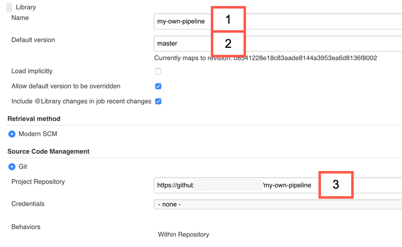

Extensibility¶
When using one of the ready-made pipelines of project "Piper", you don't have to write custom pipeline code. The pipelines are centrally maintained and can be used with only a small amount of declarative configuration as documented here.
For the vast majority of standard projects, the features of the ready-made pipelines should be enough to implement Continuous Delivery with little effort in a best-practice compliant way. If you miss a feature or discover a bug in one of our pipelines, please see if there is already an open issue in our GitHub repository and if not, open a new one.
In some cases, it's not desirable to include specialized features in the ready-made pipelines. However, you can still benefit from their qualities, if you address your requirements through an extension. Extensions are custom bits of pipeline coding, which you can use to implement special requirements.
This page explains extensibility options in project "Piper". For a high level overview of available options and how to interface with them, see this figure:

Before building extensions, please make sure that there is no alternative that works better for you.
Options for extensibility, in the order in which we recommend considering them:
1. Extend individual stages¶
In this option, you use the centrally maintained pipeline but can change individual stages, if required.
To do so, create a file called <StageName>.groovy (for example, Acceptance.groovy or lint.groovy) in .pipeline/extensions/ in the source code repository of your application.
For this, you need to know the technical identifiers for stage names.
- For the general purpose pipeline, you can find them in the pipeline source file.
- For the SAP Cloud SDK pipeline, you can find them in this GitHub search query.
The centrally maintained pipeline checks if such a file exists and if it does, executes it.
A parameter of type Map that contains the following keys is passed to the extension:
script: Defines the global script environment of theJenkinsfilerun. This makes sure that the correct configuration environment can be passed to project "Piper" steps and allows access to thecommonPipelineEnvironment, for example.originalStage: Allows you to execute the "original" stage at any place in your script. If omitting a call tooriginalStage(), only your code is executed.stageName: Name of the current stageconfig: Configuration of the stage and general config (including all defaults)
Here is a simple example for such an extension, which you can use as a starting point:
void call(Map params) { //access stage name echo "Start - Extension for stage: ${params.stageName}" //access config echo "Current stage config: ${params.config}" //execute original stage as defined in the template params.originalStage() //access overall pipeline script object echo "Branch: ${params.script.commonPipelineEnvironment.gitBranch}" echo "End - Extension for stage: ${params.stageName}" } return this
return this
Don't forget the return this, which is required at the end of all extension scripts.
This is due to how Groovy loads scripts internally.
Init stage cannot be extended
Please note that the Init stage also checks out your current repository including your extensions.
Therefore, it is not possible to use extensions on this stage.
Disable Extensions Execution
By default, there is a possibility for extensions to get executed. In case of disabling it, please ensure to set PIPER_DISABLE_EXTENSIONS to true.
Setting this parameter to true excludes the execution of extension files in .pipeline/extensions/<StageName>.groovy.
Practical example¶
For a more practical example, you can use extensions in the SAP Cloud SDK pipeline to add custom linters to your pipeline.
A linter is a tool that can check the source code for certain stylistic criteria. Many teams choose to use a linter to ensure a common programming style.
For example, if you want to use Checkstyle in your codebase, you might use an extension similar to this one in a file called .pipeline/extensions/lint.groovy in your project:
def call(Map parameters) { parameters.originalStage() // Runs the built-in linters mavenExecute( script: parameters.script, flags: ['--batch-mode'], pomPath: 'application/pom.xml', m2Path: s4SdkGlobals.m2Directory, goals: ['checkstyle:checkstyle'], ) recordIssues blameDisabled: true, enabledForFailure: true, aggregatingResults: false, tool: checkStyle() } return this
This code snippet has three components, let's see what is happening here:
Firstly, we run the original stage. This runs ESLint on JavaScript/TypeScript source files as this is a standard feature of SAP Cloud SDK pipeline.
Secondly, we run the checkstyle maven plugin using the mavenExecute Jenkins library step as provided by project "Piper".
This serves as an example for how flexible you can re-use what project "Piper" already provides in your extension.
Finally, we use the Jenkins Warnings NG plugin and its step recordIssues to make the findings visible in the Jenkins user interface.
This example can be adapted for other linters of your choice.
Be sure to checkout the Library steps section of this documentation if you want to do this.
Project "Piper" provides some basic building blocks such as dockerExecute and the already mentioned mavenExecute which might be helpful.
2. Modified Ready-Made Pipeline¶
This option describes how you can copy and paste one of the centrally maintained pipelines to make changes to it that are not possible otherwise. For example, you can't change the order of stages and the stages that run in parallel or add new stages to a centrally maintained pipeline.
A modified Ready-Made Pipeline allows you to modify your declarative pipeline based on the syntax Jenkins provides.
This might be done for an individual project (in the Jenkinsfile), or in a separate Git repository so it can be used for multiple projects.
Single project¶
The default Jenkinsfile of centrally maintained pipelines does nothing else but loading the pipeline and running it.
This is convenient but limits the modifiable aspects of the pipeline.
If one of your projects uses the pipeline, the easiest way to do this modification is to copy the pipeline into your Jenkinsfile.
The basic structure of your Jenkinsfile should be the following:
@Library(/* Shared library definition, see below */) _ call script: this void call(parameters) { // Your pipeline code based on our ready-made pipelines }
The actual pipeline code (the call method in the listing above) can be found here:
Use the correct shared library definition
Which shared library you need depends on the pipeline you're using.
For the general purpose pipeline, you need 'piper-lib-os'.
For the SAP Cloud SDK pipeline, you need 's4sdk-pipeline-library'.
For the version identifier, please see the section How to stay up-to-date in this document.
Multiple projects¶
If you have multiple projects that share a similar architecture, it might be desirable to share one modified pipeline amongst them.
Similar to what you can do in an individual Jenkinsfile, you can copy the pipeline to your own shared library and modify it.
To do this, create a new Git repository in your preferred Git hosting service.
It must be compliant to how Jenkins shared libraries are built.
In a nutshell, this means that you need a vars directory inside which you can place a copy of your preferred pipeline.
A minimal example of such a library could have the following directory structure:
./vars/myCustomPipeline.groovy ./README.md
myCustomPipeline.groovy contains the modified pipeline code of the general purpose pipeline or SAP Cloud SDK Pipeline.
Note
The name of your custom pipeline must differ from the other pipelines provided by project "Piper" because Jenkins requires names across multiple libraries to be unique.
This library must be placed in a Git repository, which is available for Jenkins and must be configured in Jenkins as documented here.
The following screenshot shows an example of the configuration in Jenkins.
Note that the name (1) must be the same as the one you use in your Jenkinsfile.

The Jenkinsfile of your individual projects would look similar to the following:
@Library(['piper-lib-os','my-own-pipeline']) _ myCustomPipeline script: this
Be sure to adapt the names and version identifiers accordingly, as described in How to stay up-to-date.
How to stay up-to-date¶
Regardless of which of the above options you choose, one downside of this approach is that your pipeline will be out of sync with the centrally maintained pipelines at some point in time. We strongly recommend doing as little modification as possible to fulfil your requirements. Please be aware that stages may have dependencies on each other.
Don't depend on stage implementation details
Your pipeline should treat stages as a black box, the stage implementations are not a published API and may be subject to change at any time.
Avoid accidental breaking changes
By default, Jenkins uses the master branch of shared libraries.
This way, you're always automatically using the latest and greatest version.
The downside is that in rare cases, breaking changes might happen.
Another potential issue is that your builds are not repeatable, that means building the same version of your application twice might have a different result.
For those reasons, you might want to consider to fix versions to a released version like in this example: @Library('my-shared-library@v1.0') _
Find the most recent release for the jenkins-library and for the SAP Cloud SDK Pipeline on GitHub.
To stay up to date with the latest releases, you can "watch" releases for those repositories on GitHub.
When to go with a modified ready-made pipeline
This option is right for you if none of the provided ready-made pipelines serves your purpose, and individual stage extensions don't provide enough flexibility.
Advanced tips and information¶
When you consider adding additional capabilities, your first stop should be the Jenkins Pipeline Steps Reference. Here you get an overview of what kind of capabilities are already available and a list of related parameters, which you can use to customize the existing implementation. The provided information should help you understand and extend the functionality of your pipeline.
3. New Pipeline from Scratch¶
Since project "Piper" fully builds on Jenkins Pipelines as Code, you can also go with your own pipeline from scratch in a Jenkinsfile.
Decoupling
If you choose this option, you will be decoupled from the innovations provided with project "Piper", unless you re-use stages (as indicated above under 2. Modified ready-made pipelines), for example.
We recommend using this only when none of the other provided options suit your use case.